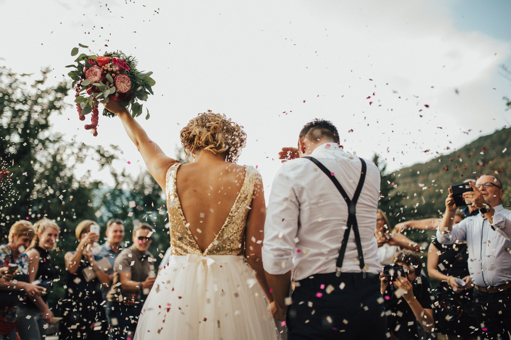

Par mani
Mans pirmais fotogrāfijas skolotājs Māris Kundziņš reiz teica: „Tev ir jāprot klausīties, lai tu varētu stāstīt”. Arī es tagad teiktu: “Kāzās svarīgākais slēpjas tajos mazajos patiesības mirkļos – tikko manāmos pieskārienos, mīlestības pilnos skatienos, slepus notraustās asarās, nejaušos smaidos un detaļu harmonijā.” Es mīlu fotografēt kāzas radošā fotožurnālistikas stilā, akcentējot patiesas emocijas, detaļas un sajūtas, lai Jūs arī pēc daudziem gadiem atcerētos savu kāzu stāstu tādu, kāds tas ir – patiess, prieka un mīlestības pilns. Es dievinu īstas, nesamākslotas emocijas un mirkļus, tapēc kāzās cenšos būt nemanāms – ļaujot ikvienam būt sev pašam.
Man ir svarīgi iepazīt katru pāri, sajust ka esam uz viena vilņa un Jūs man uzticaties. Kāzu fotogrāfs – tas ir Jūsu īpašās dienas draugs, izpalīgs un uzticamības persona. Tas ir gan gods, gan liela atbildība. Manuprāt veiksmīga komunikācija un attiecību izveide ir veiksmes atslēga uz dabīgām, nepiespiestām un emocionālām fotogrāfijām.
